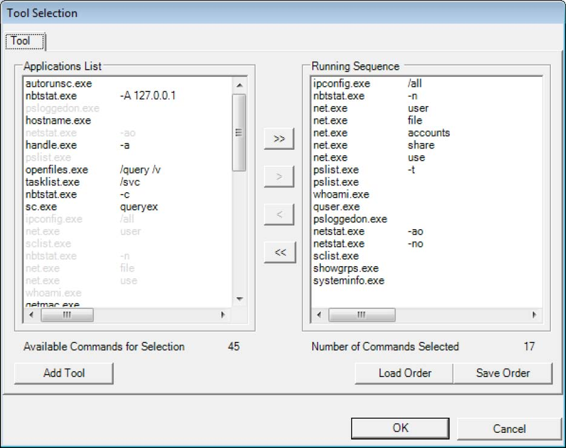
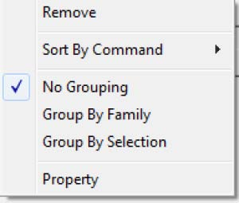
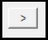
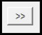
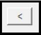
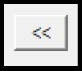
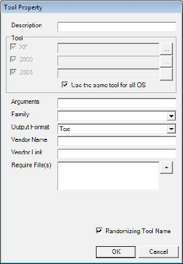
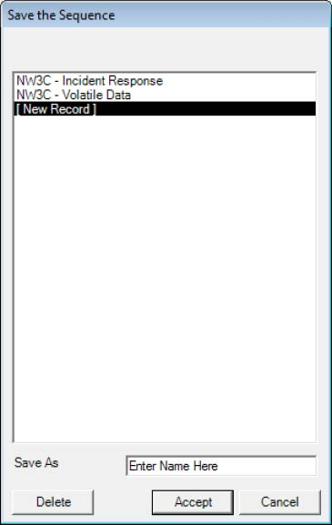
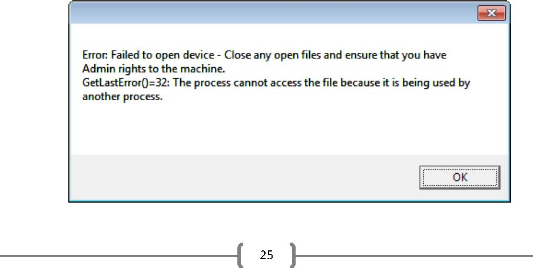
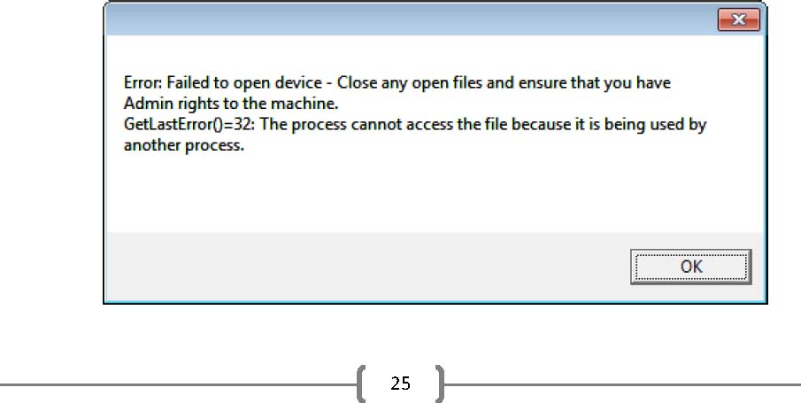

More Options (Advanced)
The More Options (Advanced) button allows a user to create and/or modify nondefault profiles. COFEE comes with two default profiles: NW3C Incident Response and NW3C Volatile Data. To create or modify a profile, follow these steps:
Step 1 Select a profile to use as a base template in the Mode dropdown list (see Section 3 of the Tool Generation GUI screenshot)
Step 2 Click the More Options (Advanced) button, and the following screen will appear

The Tool Selection Screen
The tool selection screen consists of two primary lists of files: Applications List and Running Sequence. The Running Sequence is the profile. The applications (with switches) listed here are the programs that will run as part of the profile, and will run in that particular order. The Applications List consists of all applications and switches which have been entered into COFEE (typically as part of a previous profile creation). Each item in the list consists of a combination of one application and its switch(es). A program may also be entered without a switch. A single application may be listed multiple times if each instance uses a different switch (or combination of switches). For example, in the screenshot above, net.exe is listed in the profile five times, but each time with a different switch. Any one item from the Application List can only be added once to the running sequence. If that item already exists in the running sequence, it will be grayed out in the Application List and will not allow it to be copied again.
Applications List Menu
If the user rightclicks on an item within the Applications List, the following menu appears:

-
Remove: This will remove the selected item from the Application List
-
Sort By Command: Sorts the items in the Application List
-
No Grouping: Items are displayed by application name
-
Group By Family: Organizes programs by family
-
Group By Selection: Groups by Available or Already Selected (for the current profile)
-
Property: Displays the property screen for that entry
Adding PreDefined Program(s) to Running Sequence
Adding a predefined program (including predefined switches) to the Running Sequence is a simple process.
Step 1 Select the desired tool in the Application List
Step 2 Click the single right arrow This adds the selected item to the Running Sequence The user can also choose to add all of the available programs into the Running Sequence by clicking on the double right arrow.


Removing Program(s) from Running Sequence
Removing a predefined program from the running sequence is done in the opposite way that a predefined application is added. Step 1 Select the desired tool in the Running Sequence Step 2 Click the single left arrow This removes the selected item from the Running Sequence

The user can also choose to remove all of the programs from the Running Sequence by clicking on the double left arrow.

Adding a New Tool or New Switch to the Application List
Instances will arise when an investigator will wish to use either a tool which was not included with COFEE, or use a switch which did not come predefined by COFEE. The process for either of these options is the same:
Step 1 Click Add Tool (see the Tool Selection Screen screenshot) the following screen appears Step 2 Enter a description for the tool. This description will show up in the final report and is designed to state the purpose of the application.

Step 3 Select the tool.
Step 3a If the tool is OS independent, ensure that the Use the same tool for all OS option is checked, and then click on the top browse button ( in line with XP). A standard file location dialog box will open. Find and select the tool, then click OK. This will populate all three boxes of the tool section.
Step 3b If the tool isnt OS independent, yet there is a version of the software available for each OS (e.g., netstat.exe), the user has the option of using a separate program for Windows XP, 2000, and 2003. When the programs are run as part of the COFEE process, the program will determine what OS is currently running, and use the appropriate file. To do this, ensure that the Use the same tool for all OS option is unchecked, and then load the file for each OS by clicking on its corresponding browse button (). If the application is unavailable for any of the listed OSs, uncheck that particular box (XP, 2000, 2003).
Step 4 Enter all of the desired switches for the program. The user can leave this box empty if no arguments are used.
Step 5 Select the family for which this program will belong. The family represents the purpose of the tool, and is used by COFEE to organize the acquired data. For example, the program netstat.exe belongs to the family network, while the program quser.exe belongs to the family users. The family options are: network, process, services, users, password, policy, registry, log, file, memory, opt_tool, and misc.
Step 6 Select the output format extension of the tool. This affects the output format of the tool. For example, the option Text expects the output of the program to be text. The complete list of available output formats are: Text, Image, Directory, and Memory Dump.
Step 7 The information entered in the Vendor Name and Vendor Link fields will be listed in the final report.
Step 8 Enter any additional required files. For example, some programs require specific Dynamic Linked Library (DLL) files to be included for the program to run properly. This section tells COFEE what other programs to put on the USB device other than the selected program.
Step 9 Ensure that Randomizing Tool Name is checked. This ensures that the programs copied to the USB device have a unique file name, minimizing any possibility of running a program from the suspects machine.
Step 10 Click OK If any new programs are added, ensure that the CheckSumInfo Refresh button is clicked when returning to the main COFEE GUI screen. If a new CheckSum isnt created, the process will create an error when trying to generate a USB device.
Saving a Modified Profile
An investigator may want different sets of profiles for different scenarios. After the configuration of a new running sequence, COFEE provides the ability for a user to save the new profile.
Step 1 Click Save Order button on the main Tool Selection screen (see Tool Selection Screen screenshot) and the following screen appears

Step 2 In the Save As section, type the name of the new profile
Step 3 Click Accept
Loading a Profile to Modify
By default, the More Options window will load whichever profile is selected on the main window. However, the user has the option to load a different profile to work on by clicking the Load Order button and selecting which profile they wish to modify (or view).

 
